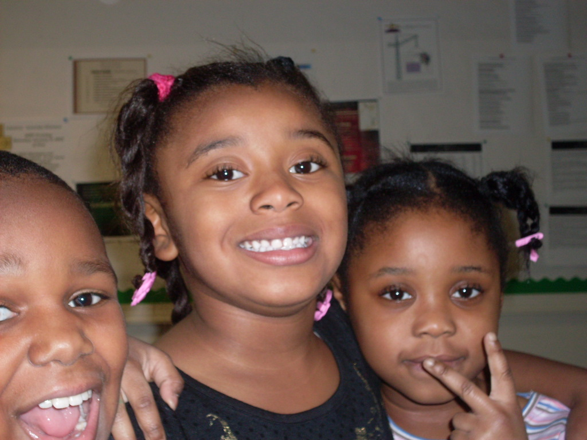
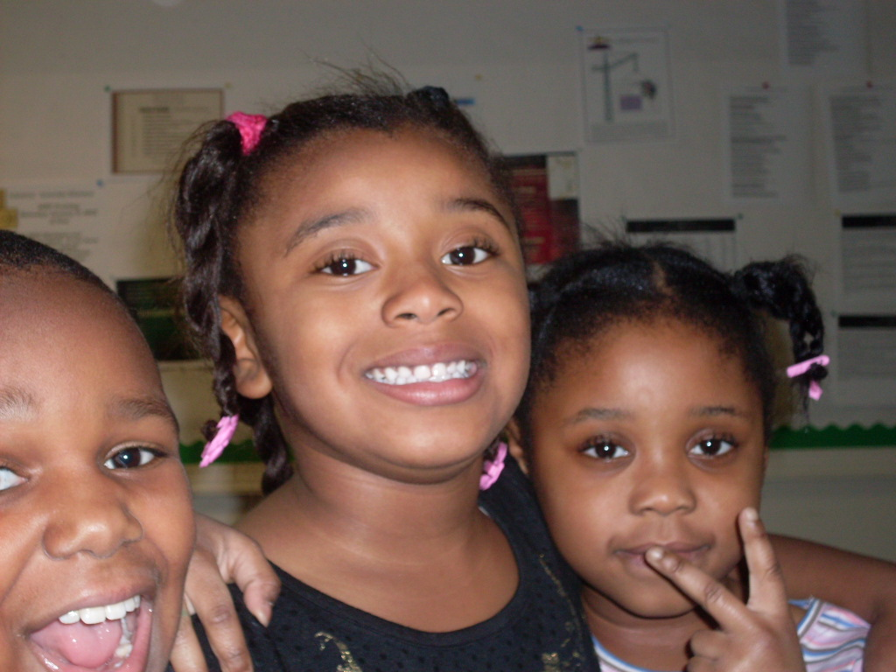

- IN HIS IMAGE
Creative Sunsets was founded in 1999. It was the first component of In His Image. Participants involved in Creative Sunsets are ages five to seven, who have developmental delays. Creative Sunsets is not a daycare, but instead a therapeutic service that prepares Pre-K students for school. All children are given an academic assessment by which a treatment plan is developed prior to the start of services. Follow-up assessments are conducted every 6 months in order to track progress.
Service hours are from 8:00 a.m. until 5:00 p.m. Monday through Friday. At this moment, Mobymax curriculum is used; however, in Fall 2017 this will change. Students are taught numbers, letters, phonics, music, art, and physical education every day. The educational component is five hours. For the remainder of the day, children participate in social activities and one-on-one time with teachers. The teacher to child ratio is 1:5. Children also participate in field trips twice a year. All field trips are educational, yet fun for the students. Parents are encouraged to attend the field trip with their children.
Parenting Classes are taught two times a month on various topics. Creative Sunsets emphasizes the importance of learning to discipline, assist in the educational process, and teach their child/children to thrive socially. Parents are also given the opportunity to further their education in the T.C.E.S. service or through GED preparation courses.
Home-visits are scheduled monthly. Home-visits are used to promote team participation and involvement. Parents are provided with ideas to implement in the home.
 
